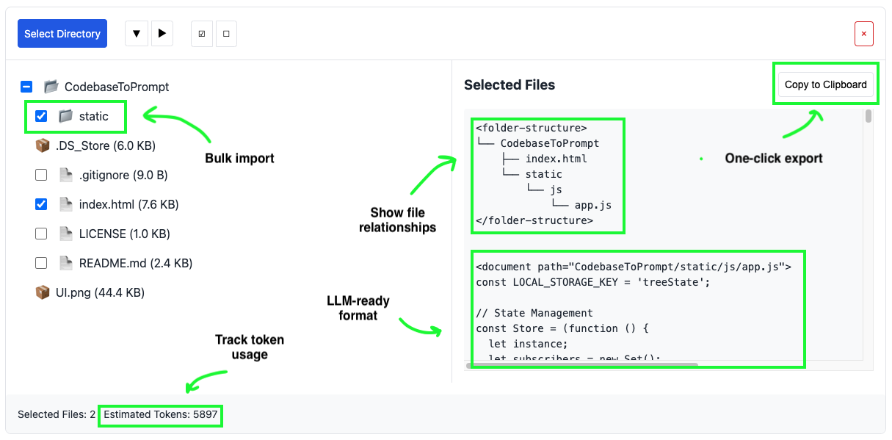

How to Use CodebaseToPrompt
This page explains how to use the tool to convert your local directory into a structured prompt
for Large Language Models (LLMs).

Overview
CodebaseToPrompt scans your chosen folder right in the browser (files are only loaded to your
local browser) and builds a file tree. You can expand folders, see which files are text or code,
and select only what you need.
Features
-
Interactive File Tree: Explore and expand your local folders in a simple
interface.
-
File Filtering: Automatically ignores system or binary files (e.g., .DS_Store,
node_modules).
-
Local Storage: Your selections are remembered so you can pick up where you
left off.
-
LLM-Ready Output: Generates a format that's easy to paste into chatbots and
other AI tools.
-
Token Count Estimate: Provides a rough calculation of how many tokens the
selected content might use.
-
Flexible Text Selection: Choose between selecting text or copying to clipboard
- "Select Text" works in all environments while "Copy to Clipboard" requires HTTPS.
How to Use
Follow these steps to get started:
-
Open the App: Clone this repository, then open
index.html in a
modern browser.
-
Select Your Folder: Click “Select Directory” to choose the folder you want to
analyze.
-
Pick Files: Expand or collapse directories. Check or uncheck files to decide
what gets included.
-
Copy Output: View or copy your selected files in the generated prompt format
by clicking “Copy to Clipboard.”
Back to Main Page